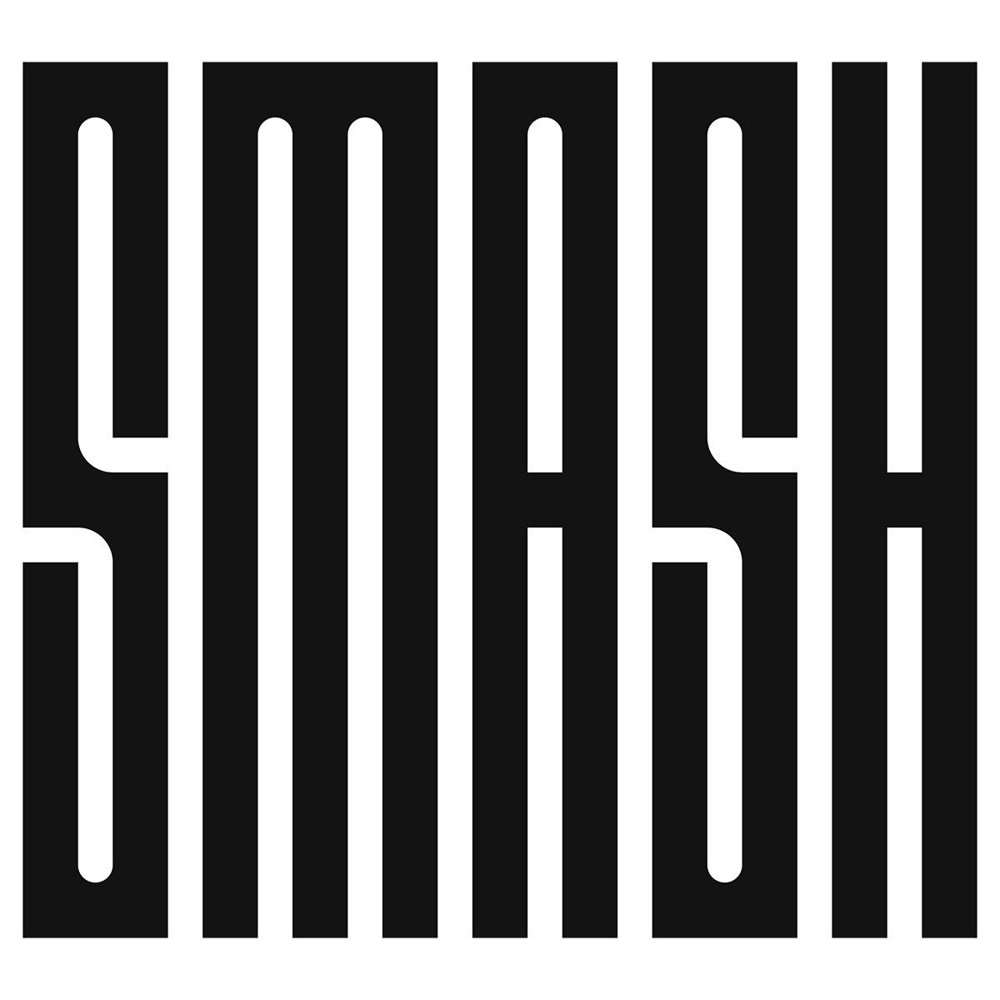
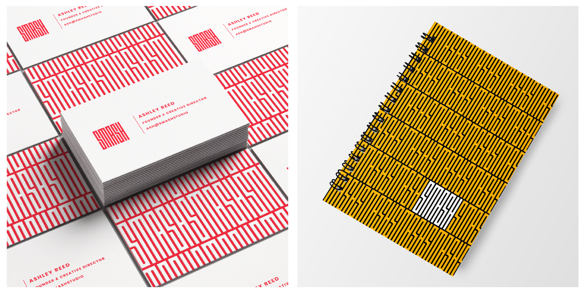
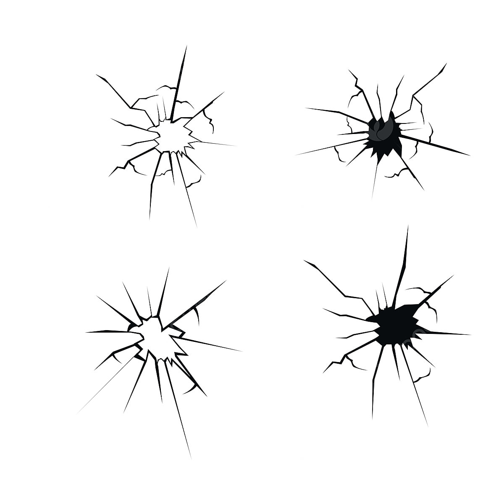

Current wordmark
Built internally ~5 years ago. Tall, condensed, distinctive — we feel the equity is real. Open to evolution, not a full rebuild. Whatever comes next should feel like a clear step forward from this.
Two things.
1. Give you a real picture of SMASH — who we are, what we make, where we want to go.
2. Agree on scope and deliverables — what you'll make for us, and how we'll work together.
Everything else (concepts, explorations, decisions) comes later.
| 1 | Who SMASH is | 10 min |
| 2 | The work | 10 min |
| 3 | What we need from you | 10 min |
| 4 | The symbol concept | 10 min |
| 5 | Scope & next steps | 15 min |
A three-person experience design studio in Stockholm. Interactive installations, projection mapping, immersive environments, stage design, animated film. We transform physical spaces through art, technology, and storytelling.
Started as two, grew to three. Small team, big rooms.
The short version: we make places feel different. The tools change — projection, sensors, scenography, sound — but the goal is always the same: people walk in and something shifts.
Sweden, San Francisco, Barcelona. Dark rooms. Building facades. Festival stages. Museum halls.
The work is always in a physical space. It's not a screen you sit in front of — it's a room you walk into. That's the throughline across every category, and it's what the brand needs to carry.
The current identity is about five years old and was built internally. It served its purpose. Now the website is being rebuilt, and we need a brand that can carry SMASH into the next phase.

Built internally ~5 years ago. Tall, condensed, distinctive — we feel the equity is real. Open to evolution, not a full rebuild. Whatever comes next should feel like a clear step forward from this.

Website (new build in 2026), pitch decks, social, event branding, case study films.
The market clusters around two poles. Neither is us.
Smooth, professional, forgettable.
Prestigious, cold, gatekept.
SMASH sits in the gap:
SMASH is not a tech company · a generic agency · an art collective too elevated to take a brief · corporate.
Not a tagline yet — the territory the brand should support.
The collision between physical space and creative imagination.
Previous line: "A spectacular collision between the real and the imagination." Captures the spirit, needs more punch.
A shattered or splintered glass mark. Dual meaning:
The break is the beauty.

The symbol should stand completely on its own. Wordmark and symbol are both synonymous with SMASH — you see the abstract glass thing and you think that's SMASH. Nike-swoosh energy. The mark alone carries the identity.
Open across the spectrum — from an obvious radial impact to a subtle angular geometry where you discover the glass reference. Six rough explorations attached (references/symbols/) to show the range — conversation starters, not options to pick.
| A | Full radial impact | Most literal, closest to original sketch |
| B | Radial with S in negative space | Hidden initial — one idea |
| C | Contained cluster | Shards within a circle, icon-friendly |
| D | Minimal crack | Clean square, single fracture, most subtle |
| E | Abstract shard | Single fragment, most reduced |
| F | Tessellation | Angular facets filling a shape, crystalline |
Starting points, not decisions. Push back where your eye tells you to.
We like this yellow. It's warm, confident, and it pops against dark backgrounds without feeling corporate or childish. It's been on our decks and it feels like SMASH. We'd love to see it carry forward — evolved, refined, or paired differently — rather than replaced. Open to being wrong if your eye says otherwise.
Clear · confident · warm · practitioner voice. No "we create experiences that inspire." Punchy and declarative.
To fill in by end of meeting.